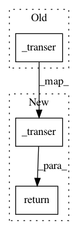

709f53d5a3048bde0ab7426b2729bf7c60dc38e2,torch_geometric/datasets/dataset.py,Data,cuda,#Data#Any#,108
Before Change
setattr(self, prop, func(getattr(self, prop)))
def cuda(self, props=None):
self._transer(lambda x: x.cuda(), props)
def cpu(self, props=None):
self._transer(lambda x: x.cpu(), props)
After Change
return data
def cuda(self, props=None):
return self._transer(lambda x: x.cuda(), props)
def cpu(self, props=None):
return self._transer(lambda x: x.cpu(), props)
In pattern: SUPERPATTERN
Frequency: 4
Non-data size: 3
Instances
Project Name: rusty1s/pytorch_geometric
Commit Name: 709f53d5a3048bde0ab7426b2729bf7c60dc38e2
Time: 2018-02-10
Author: matthias.fey@tu-dortmund.de
File Name: torch_geometric/datasets/dataset.py
Class Name: Data
Method Name: cuda
Project Name: rusty1s/pytorch_geometric
Commit Name: 709f53d5a3048bde0ab7426b2729bf7c60dc38e2
Time: 2018-02-10
Author: matthias.fey@tu-dortmund.de
File Name: torch_geometric/datasets/dataset.py
Class Name: Data
Method Name: to_variable
Project Name: rusty1s/pytorch_geometric
Commit Name: 709f53d5a3048bde0ab7426b2729bf7c60dc38e2
Time: 2018-02-10
Author: matthias.fey@tu-dortmund.de
File Name: torch_geometric/datasets/dataset.py
Class Name: Data
Method Name: cpu
Project Name: rusty1s/pytorch_geometric
Commit Name: 709f53d5a3048bde0ab7426b2729bf7c60dc38e2
Time: 2018-02-10
Author: matthias.fey@tu-dortmund.de
File Name: torch_geometric/datasets/dataset.py
Class Name: Data
Method Name: to_tensor